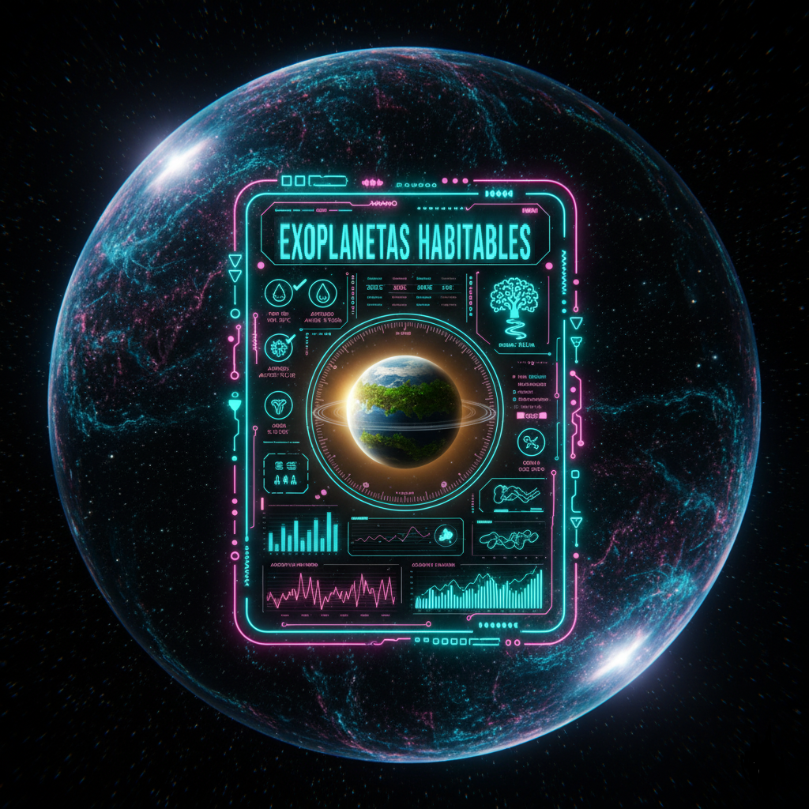
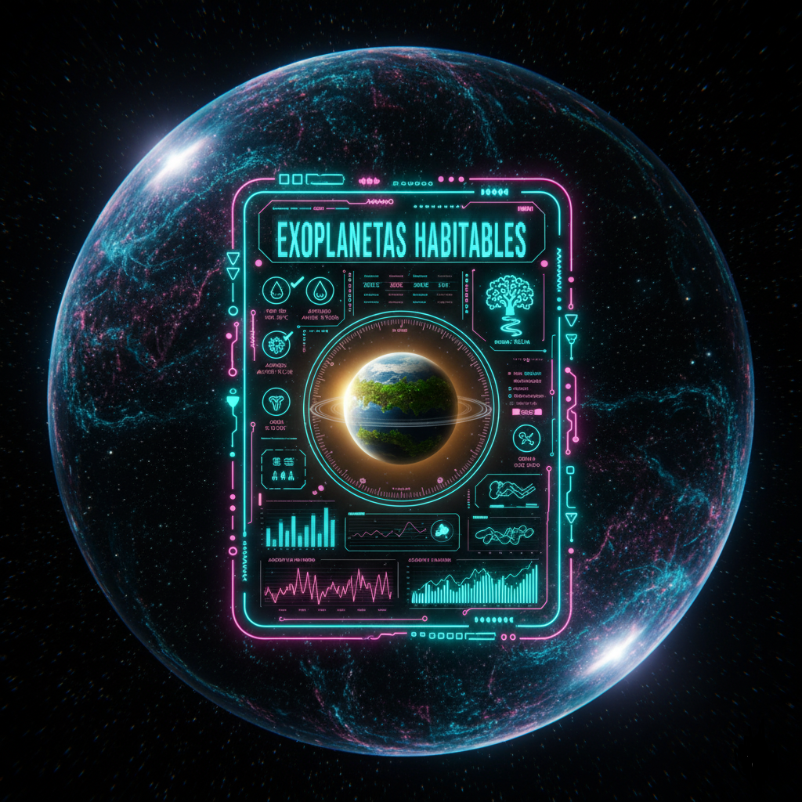

🚀 Misiones Espaciales
Conoce la línea de tiempo de las misiones que amplían nuestras fronteras cósmicas.
🌌 Exoplanetas Habitables
Explora mundos donde la vida podría ser posible. Analiza gráficos y datos estelares.
Conoce la línea de tiempo de las misiones que amplían nuestras fronteras cósmicas.
Explora mundos donde la vida podría ser posible. Analiza gráficos y datos estelares.